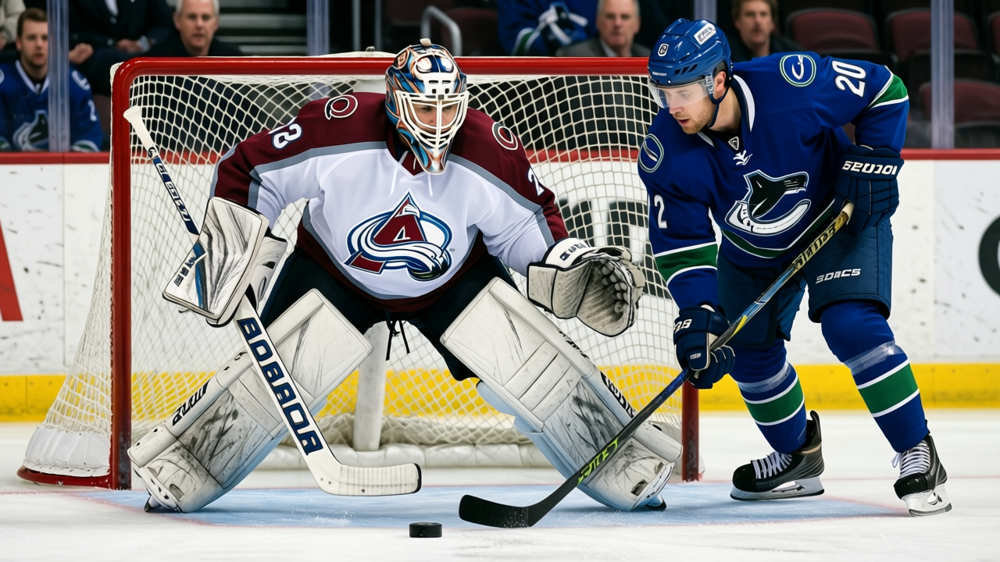
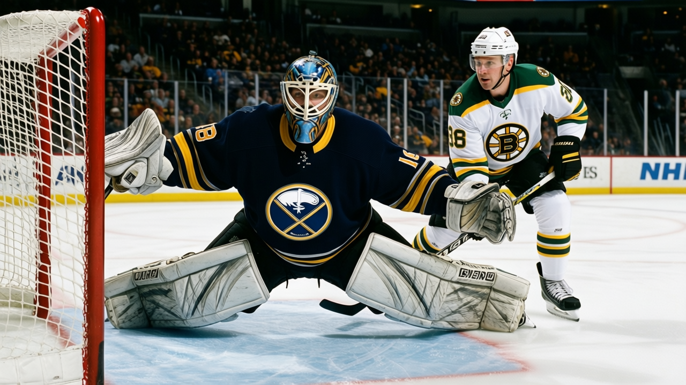
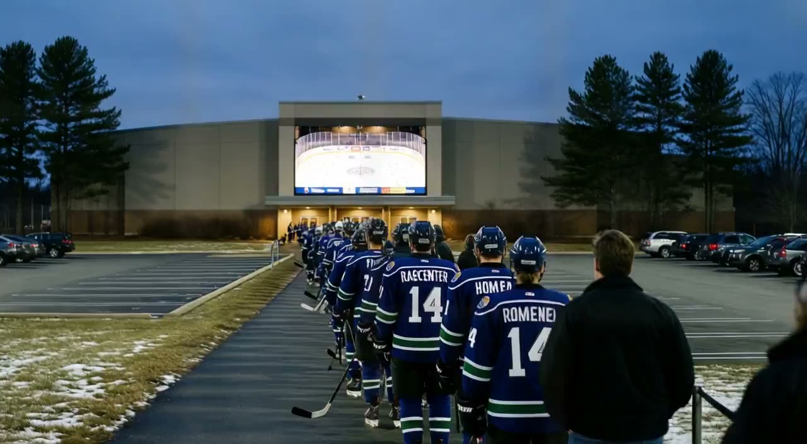
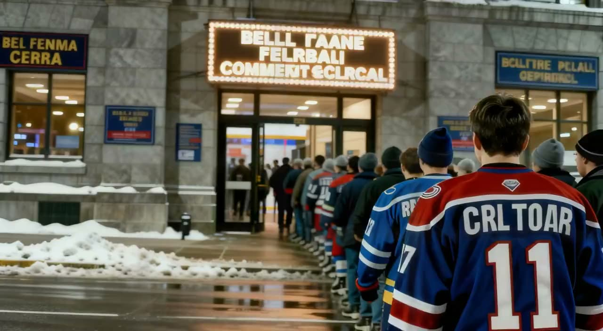
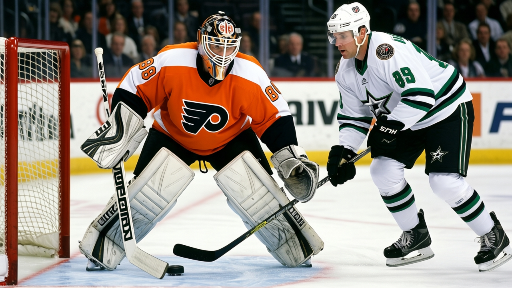
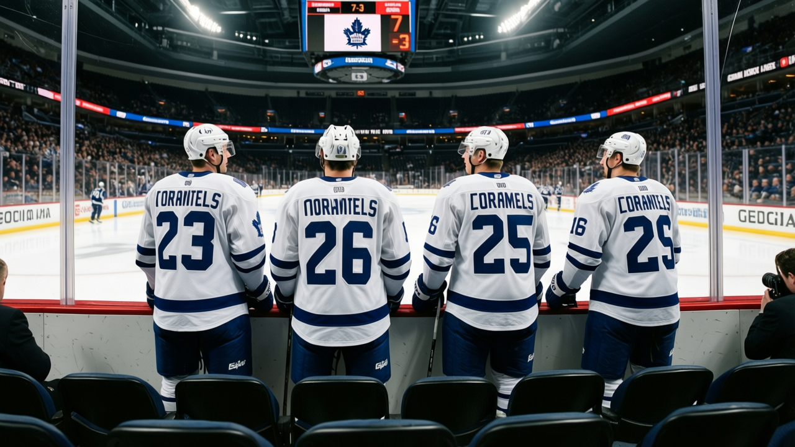
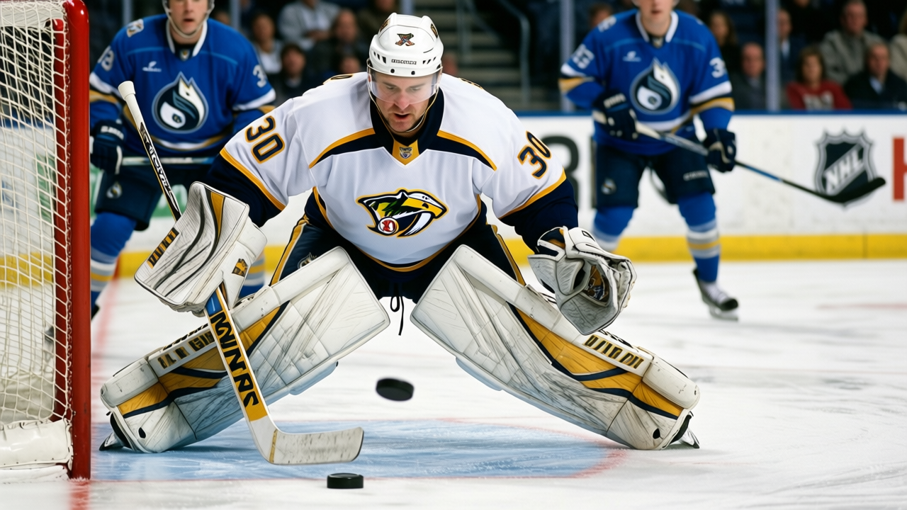

Notes from the West: Nashville's streak hits 9, and 25 goals against in 10 is the number
The Predators lead the Central by 4 points and the run is built on the back end.


 Ray Callum·2 min read
Ray Callum·2 min readThe Predators lead the Central by 4 points and the run is built on the back end.
Ray Callum·2 min read




The night's pick of the fixtures, on tape: it went to overtime; the clubs put 9 goals between them; they are level on points.

 Home Ice Network·1 min read
Home Ice Network·1 min read
The Flyers outshot the Stars 29-22; Hitchcock benched Esche, scratched Kallio, and installed new signing Seidenberg


 Ray Callum·1 min read
Ray Callum·1 min read
LA beat San Jose 4-3 in overtime Saturday; Cechmanek has started 26 of 31, 84 percent of the workload


 Ray Callum·1 min read
Ray Callum·1 min readThe Stars' last 10: 55 for, 29 against. The Blackhawks' last 10: 24 for, 45 against. That is the entire story.

 Ray Callum·1 min read
Ray Callum·1 min read
Two days after shutting out San Jose, the Thrashers outshot the league's best club 30-19 and won by 4.

 Ray Callum·1 min read
Ray Callum·1 min read
Vancouver and Nashville are tied at 40. The game is in Nashville, where the Predators are 8-5 and the Canucks are 7-8 on the road.
Ray Callum·2 min read